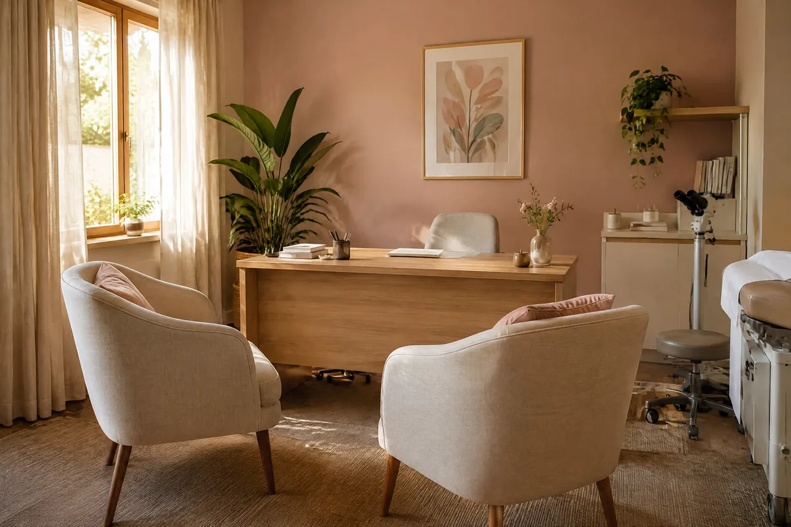
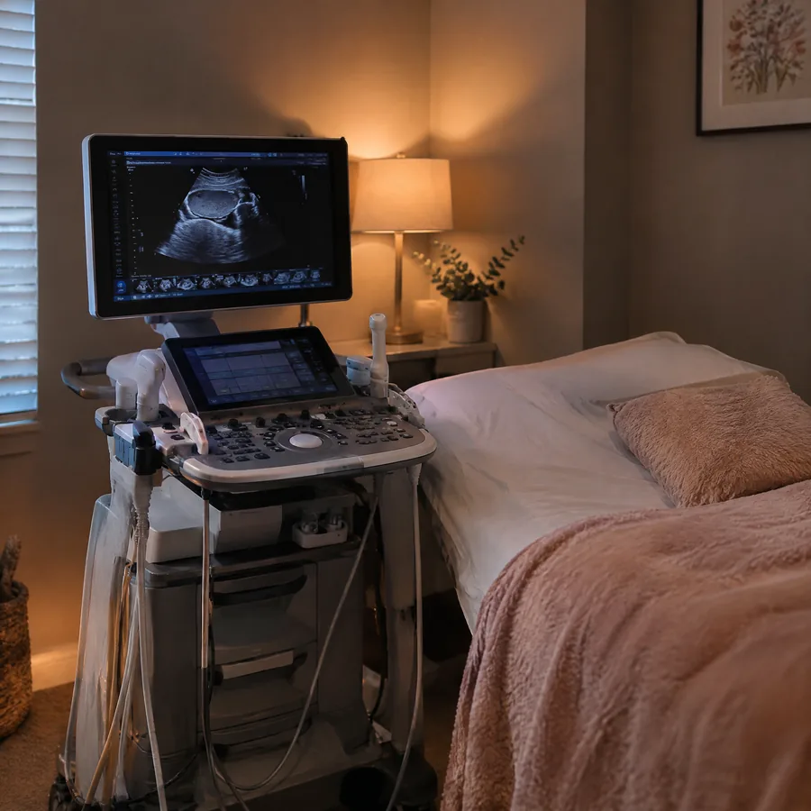

مراقبتهای بارداری
ویزیتهای منظم، آزمایشهای غربالگری و آمادگی برای زایمان.
وقت کافی برای شنیدن حرفهایتان، توضیح سادهی هر آزمایش، و تصمیمگیری دربارهی درمان همراه با خود شما.

دکتر لیلا صدری سالهاست در زمینهی بارداری، درمان ناباروری و معاینههای دورهای زنان کار میکند. به نظر او هر بیمار حق دارد بداند چرا یک آزمایش لازم است و چه راههای درمانی دارد.
ویزیتهای منظم، آزمایشهای غربالگری و آمادگی برای زایمان.
بررسی علت، درمان دارویی و آییوآی.
پاپاسمیر، معاینهی پستان و سونوگرافی.
کم کردن عوارض یائسگی و مراقبت از استخوانها.
عادت ماهانهی نامنظم، خونریزی زیاد و درد پریود.
آزمایشها و مکملهایی که قبل از بارداری لازم است.
در هر مرحله میدانید چه کارهایی باید انجام شود. برنامهی دقیق شما را پزشک تعیین میکند.
آزمایشهای اولیه، مصرف اسید فولیک و بررسی بیماریهای زمینهای
تأیید بارداری، اولین سونوگرافی و غربالگری نوبت اول (هفتهی ۱۱ تا ۱۴)
سونوگرافی آنومالی و آزمایش قند بارداری
ویزیتهای بیشتر، بررسی وضعیت جنین و تصمیم دربارهی نوع زایمان
ویزیت ۶ هفته بعد از زایمان، شیردهی و حال روحی مادر

روز و ساعت را انتخاب کنید؛ پیامک تأیید برایتان ارسال میشود.
روز
ساعت
ابتدا یک روز را انتخاب کنید.
معمولاً بین هفتهی ۶ تا ۸ بارداری. اگر درد یا خونریزی دارید، زودتر مراجعه کنید.
بله، همسر یا یکی از نزدیکانتان میتواند در جلسهی مشاوره همراهتان باشد.
سونوگرافیهای معمول بله؛ برای سونوگرافیهای تخصصی به یک مرکز معتبر معرفی میشوید.
بله، پروندهی شما فقط در اختیار پزشک است.